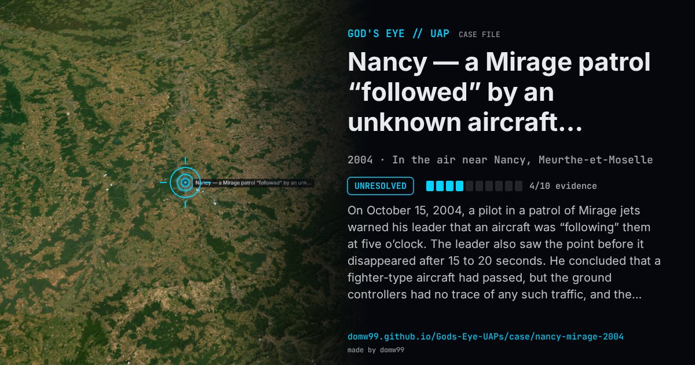

Nancy — a Mirage patrol “followed” by an unknown aircraft (GEIPAN class D)
UNRESOLVED

On October 15, 2004, a pilot in a patrol of Mirage jets warned his leader that an aircraft was “following” them at five o’clock. The leader also saw the point before it disappeared after 15 to 20 seconds. He concluded that a fighter-type aircraft had passed, but the ground controllers had no trace of any such traffic, and the event was left unexplained.
Explanation
GEIPAN classes it D. The patrol leader took it for a fighter-type aircraft, but the ground controllers had no trace of any traffic there, and nothing was identified.
What was seen
Shape: A point in the sky behind the patrol, taken for a fighter
Witnesses: The pilots of a patrol of Mirage jets
Duration: 15 to 20 seconds
Sources
Browse
- France
- 2000s
- Unresolved
- Military encounters
- Official government documents
- Military witnesses
- Pilot and aircrew witnesses